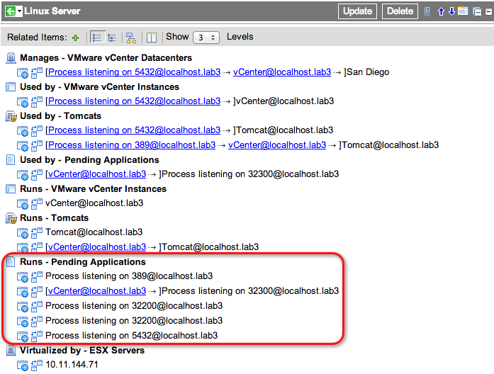

Application Dependency Mapping
| |
Note: This article applies to Fuji. For more current information, see Discovery at http://docs.servicenow.com
The Wiki page is no longer being updated. Please refer to http://docs.servicenow.com for the latest product documentation. |
Contents
- 1 Overview
- 2 Requirements
- 3 System Properties
- 4 Probes and Sensors
- 5 Application Relationships
- 6 Accessing Dependency Maps
- 7 Upstream and Downstream Relationships
- 8 Application Dependencies
- 9 Adding CI Relationships
- 10 Automatically Classified Applications
- 11 Pending Process Classifiers
- 12 Enhancements
1 Overview
Application dependency mapping (ADM) creates relationships between interdependent applications. ADM identifies:
- The devices that are communicating with one another.
- The TCP ports these devices use for communication.
- The processes that are running on these devices.
For example, if a web server application uses a database server application, the web server depends on the database. The web server also runs on the host or server cluster. You can use the data from running processes to determine which devices to drill into to see more application-specific configuration data.
You can disable ADM and use the ADM probes and sensor to collect active connections and active process information without collecting all the application dependency mapping information.
2 Requirements
Your instance must meet the following requirements to use application dependency mapping:
- ADM system properties are enabled.
- ADM probes are configured.
- Process classifications are configured.
2.1 Windows 2000 Server Requirements
The Windows - Active Connections probe associates running processes on Windows machines with the ports on which they communicate, using the netstat command. Windows 2000 Server and Windows workstations, in their default configuration, cannot associate process IDs with ports using the netstat command. This prevents Discovery from providing application mapping on these machines. To enable a Windows 2000 Server or workstation to support process-to-port connections in the ServiceNow system, apply this Microsoft hotfix. This hotfix enables these Windows machines to support the -o parameter of the netstat command, which enables Discovery to associate processes with TCP/IP connections.
3 System Properties
| Property | Description |
|---|---|
| glide.discovery.application_mapping | Enables or disables the ADM feature.
You can disable this system property and run the ADM probes to discover active connections or active processes without running ADM.
|
| glide.discovery.auto_adm | Automatically creates process classifiers for application dependency mapping. When Discovery detects processes that are communicating over the network, "Pending Process" classifiers are automatically generated.
|
| glide.discovery.active_processes_filter | Provides optimization for application dependency mapping. If set to true, the active processes returned by Discovery are filtered down to only allow those that have a match in the Process Classification table. This property is disabled if the glide.discovery.auto_adm property is set to true.
This property is available starting with the Fuji release.
|
4 Probes and Sensors
ADM uses the following probes and sensors to explore applications and determine their relationships. To only collect information about active connections and active processes, disable ADM before you run these probes.
4.1 ADM Probes
ADM uses the following probes (starting with the Dublin release).
| Name | Probe Type | Description | Includes Probes |
|---|---|---|---|
| AIX - ADM | Multiprobe | Queries for information about active (running) AIX processes and active connections - the information required to perform application dependency mapping. |
|
| HP-UX - ADM | Multiprobe | Queries for information about active (running) HP-UX processes and active connections - the information required to perform application dependency mapping. This probe requires that lsof be installed and the Unix - Active Connections probe be activated, which is inactive by default. |
|
| Solaris - ADM | Multiprobe | Queries for information about active (running) Solaris processes and active connections - the information required to perform application dependency mapping. This probe requires that lsof be installed. |
|
| Unix - ADM | Multiprobe | Queries for information about active (running) Unix processes and active connections - the information required to perform application dependency mapping. |
|
| Windows - ADM | Multiprobe | Queries for information about active (running) Windows processes and active connections - the information required to perform application dependency mapping. |
|
4.2 ADM Sensors
ADM uses the following sensors (starting with the Dublin release).
| Name | Sensor Type | Description | Responds to Probes |
|---|---|---|---|
| AIX - ADM | Javascript | Updates the running processes and active connections, and runs application dependency mapping. |
|
| HP-UX - ADM | Javascript | Updates the running HP-UX processes and active connections, and runs application dependency mapping. This sensor requires that lsof be installed. |
|
| Solaris - ADM | Javascript | Updates the running Solaris processes and active connections, and runs application dependency mapping. This sensor requires that lsof be installed. |
|
| Unix - ADM | Javascript | Updates the running Unix processes and active connections, and runs application dependency mapping. |
|
| Windows - ADM | Javascript | Updates the running Windows processes and active connections, and runs application dependency mapping. |
|
5 Application Relationships
Discovery maps application data automatically into upstream and downstream relationships, using the following types:
- Runs on::Runs
- Depends on::Used by
- Hosted on::Hosts
- Virtualized by::Virtualizes
- Contains::Contained by
- IP Connection::IP Connection
| |
Note: For information on how Discovery classifies processes and establishes relationship types, see Process Classifications. |
6 Accessing Dependency Maps
- Navigate to Configuration and select a CI class (such as Servers, Database Servers, or Database Instances).
- Select a specific CI from the list.
- In the CI record, click the map icon in the Related Items header bar.
- In the dependency map that appears, right-click on the arrow connectors between CIs to display the relationship type.
{kind=link}
{kind=link}
7 Upstream and Downstream Relationships
In upstream and downstream relationships, anything that happens downstream can have an adverse affect on upstream configuration items. In our example relationship, if the virtual server sannnm-01 crashes, the database instances and the web server upstream are adversely affected. Likewise, if the web server fails, the web site hosted on it goes down. The CI record for the virtualized Windows server sannnm-01 with its upstream and downstream relationships is shown below. The downstream relationships show that this server is virtualized by VMware running on a Windows server named sandb01. Our upstream relationships show a MySQL instance, a SQL instance, and a web server running on sannnm-01. Farther upstream, a web site is hosted on the web server.
{kind=link}
7.1 Deleting CIs
When you delete a CI from the CMDB, ServiceNow also deletes all relationships with that CI.
Deleting a CI affects references to the CI in Incidents, Problems and Changes. In some situation, it might be preferable to block a CI by setting the install_status or hardware_status attributes to retired, without deleting the CI.
8 Application Dependencies
This screenshot displays the application dependencies between three different JBoss application servers and the local Apache web site. In this example, the three JBoss application servers on three different physical machines have a TCP connection to the local Apache application on www.online1.com. Additionally, there are five Apache web servers using the local JBoss application.
{kind=link}
9 Adding CI Relationships
Discovery automatically maps the dependencies between CIs that it finds in the network and assigns the appropriate type to each relationship. ServiceNow configuration enables administrators to add dependencies manually and to define the appropriate relationship type between new configuration items based on lists of suggested relationships. The best practice when adding application dependencies to a configuration item is to avoid the use of the Runs on/Runs and Hosted on/Hosts types. When a configuration item is deleted, any upstream CIs with a relationship type of Runs on or Hosted on is deleted as well. In some cases, manually added CIs might have other important dependencies that are adversely affected by the cascade deletion triggered by these two relationship types.
To add a dependency:
- In a CI record, click the + icon in the Related Items toolbar.
- Select the appropriate relationship type from the list at the top of the page.
- Create and run an appropriate filter to make the CI visible in the list of available CIs.
- Move the CI from the list of available CIs to the dependent list.
- Click Apply to.
{kind=link}
{kind=link}
9.1 Example
An example of the importance of selecting the proper relationship type is when the Business Service dependency, PeopleSoft CRM, is added to the sannnm-01 virtual server in the following diagram. If PeopleSoft CRM is added with a relationship type of Depends on, it is protected from the cascade delete triggered by the deletion of the Windows server sannnm-01. This is important because PeopleSoft CRM has dependencies to other servers and must not be deleted.
{kind=link}
10 Automatically Classified Applications
If the glide.discovery.auto_adm system property is enabled, Discovery automatically creates a classification record for processes that connect to or listen on a TCP port. In addition, the application dependency map displays the relationships between the communicating process and other CIs. Discovery administrators can view automatically classified processes from:
- The related item list of a CI that has a relationship to the automatically classified process
- The classification definitions available from the Pending Process module.
Automatically classified applications are available starting with the Dublin release.
10.1 Viewing Automatically Created Processes from the CI Related List
The application dependency map lists processes that it finds communicating with other devices or processes as automatically discovered applications. These applications have a Runs - Pending Applications relationship in the CI's application dependency map.
- Navigate to Configuration and select the CI type you want to view. For example, Servers > Linux.
- Select the CI whose relationships you want to view.
- The Related Items section displays the relationships the CI has to other CIs.
- Look for the relationship Runs - Pending Applications. For example, this Linux Server has several unclassified processes that run on it.
- Processes with a Runs - Pending Applications relationship
- Click the application dependency map icon.
{kind=link}
Each automatically-generated process follows these naming conventions:
- The name starts with the Process prefix.
- The name indicates whether the process is listening on or connecting to a TCP port.
- The name indicates the TCP port the process listens on or connects to.
- The name includes the name of the host running the process after the at (@) symbol.
11 Pending Process Classifiers
Pending process classifiers identify interdependent processes, based on TCP connections, that are not classified by the system-provided process classifiers, such as database or web servers, or even proprietary applications. They can be refined as needed to properly identify the same processes in future discoveries, or be used to simply ignore those processes altogether.
{kind=link}
Pending process classifiers are initially denoted by a name starting with "Pending:" and use the underlying running process name, command, and parameters as matching conditions. A running process matching the given conditions also creates a record in the Pending Application [cmdb_ci_appl_pending] table and uses the Runs on::Runs relationship to associate it with the appropriate computer CI. They can be refined as needed and used to classify desired processes or to define processes that should simply be ignored.
Pending process classifiers are available starting with the Dublin release.
11.1 Converting a Pending Process Classifier Into a Conventional Process Classifier
If a process should have its own conventional classifier, a few updates may be useful for properly creating discovery data. First, determine if the given process or application is represented by an existing CI table. If such a table does exist, it can simply be selected for the Table field in the process classifier. If a suitable table does not exist, a new one can first be created (see Creating a Table Using the Application Instance Table below). Additionally, the classifier name can be changed to give it meaning specific to the given process or application, and the condition (especially Name, Command, and Key parameters) can be refined to provide better matching characteristics. For more information, see Process Classifications.
11.2 Creating a "No classify" Process Handler
A "No classify" process handler prevents future discoveries from classifying matching processes, and also prevents creation of new Pending Process Classifiers and Pending Applications for that process. It does this by creating a new Process Handler with the Classify field set to false, using the same conditions as the given Process Classifier. To create a "No classify" process handler:
- Under Related Links, click Create "No classify" process handler.
- Click Yes in the Confirm pop-up box.
{kind=link}
11.3 Creating a Table Using the Application Instance Table
A new application instance table, with a classifier name suitable to the process or application, can be created by extending the Application instance table [cmdb_ci_appl] if a suitable table does not exist. The new table is used both for the classifier and any related applications. To create a table using the application instance table:
- Under Related Links, click Create, use application instance table.
- In the Name field, enter a name for the table, where the name you provide will be appended to u_cmdb_ci_appl_ to form the table name. You can provide up to 15 letters and underscores.
- In the Label field, enter a label for the new table.
- Click Yes in the Confirm pop-up box.
{kind=link}
11.4 Deleting Application Instances
Deleting application instances deletes all application records that reference the given classifier. The classifier is also deleted. To delete the application instance:
- Under Related Links, click Delete application instance.
- Click Yes in the Confirm popup box.
{kind=link}
11.5 Creating Pending Processes Classifiers for Local Connections
By default, Discovery does not create pending process classifier records for processes that communicate with one another on the same host (starting with Eureka release). For example, if Discovery finds process A connecting to a port on the local host and another process B listening on the same port of the same local host, these two processes are considered a local connection.
To have Discovery create pending process classifiers for local connections:
- Navigate to Discovery > Properties.
- For Map local connections for pending process classifier, select Yes.
-
- Click Save.
{kind=link}
| |
Note: This property only affects pending process classifiers. Discovery always applies existing process classifications if their triggering conditions are met. |
12 Enhancements
12.1 Eureka
- Allows Discovery administrators the option to create pending process classifiers for processes communicating on the same host.
12.2 Dublin
- Creates pending process classifiers for processes found connecting to and listening on communications ports.
- Uses new probes and sensors to explore applications and determine their relationships.
- Displays relationships for automatically classified applications in the application dependency map.